Des zones industrielles, des ports, des lotissements, des
quartiers, un stade, des ensembles immobiliers… des
milliers de nouveaux bâtiments ont vu le jour entre 2000
et 2015. Métamorphosant en profondeur Brest et les
sept communes de la métropole.

Brest renaît et avec elle, de grands projets fleurissent.
Précurseurs de la métamorphose, le multiplex
Liberté fut le premier projet à sortir de terre
en 2005. Par la suite, d’autres équipements loisir
se développent, comme la Carène ou le Brest
Arena. L’inauguration du tramway, plébiscité par
les Brestois, est le plus grand projet érigé par la
ville. Celui-ci a d’ailleurs engendré la réhabilitation
de Pontanezen. L’aéroport et le téléphérique ont
accompagné cette révolution des transports.
Les projets comme celui du port, de la zone Froutven
et du Polder ont renforcé l’attractivité du territoire.
Ces projets font de Brest une ville qui tend vers
une métropole d’envergure.

Deux tiers des bâtiments construits entre 2000 et
2015 sur le territoire de Brest Métropole l’ont été
dans les communes de la première couronne. Le
Relecq-Kerhuon et Plougastel-Daoulas caracolent
en tête des territoires les plus fertiles du
siècle. Ce qui démontre bien, si cela était encore
nécessaire, une lourde tendance à l’étalement
urbain.
Et à Brest mêm’, comme on dit dans le coin ? Le
changement se concentre toujours sur les exté-
rieurs avec comme principales métamorphoses :
La Cavale-Blanche, Saint-Pierre, Kergaradec et
Bellevue. A noter que les trois quartiers qui ont le
moins évolué sur la période sont le Bouguen, Kerinou
et le Centre-Siam.


 Gazette
Gazette Votre avis
Votre avis Photos
Photos


Centre-ville beaucoup plus agréable avec l'arrivée du tram
Un homme, 37